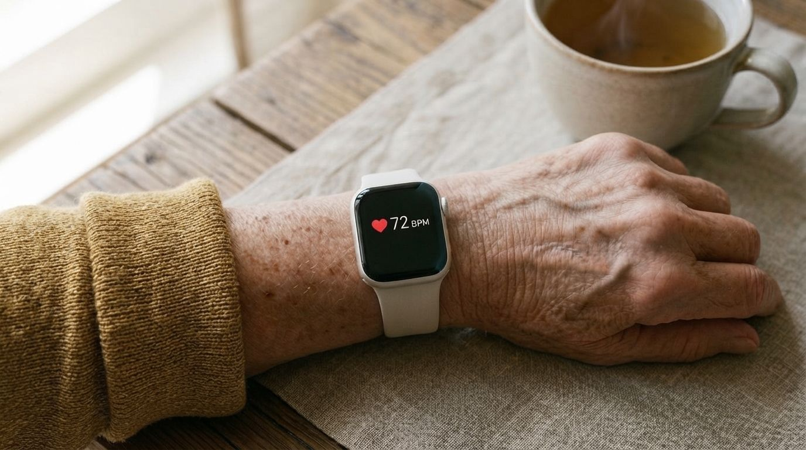
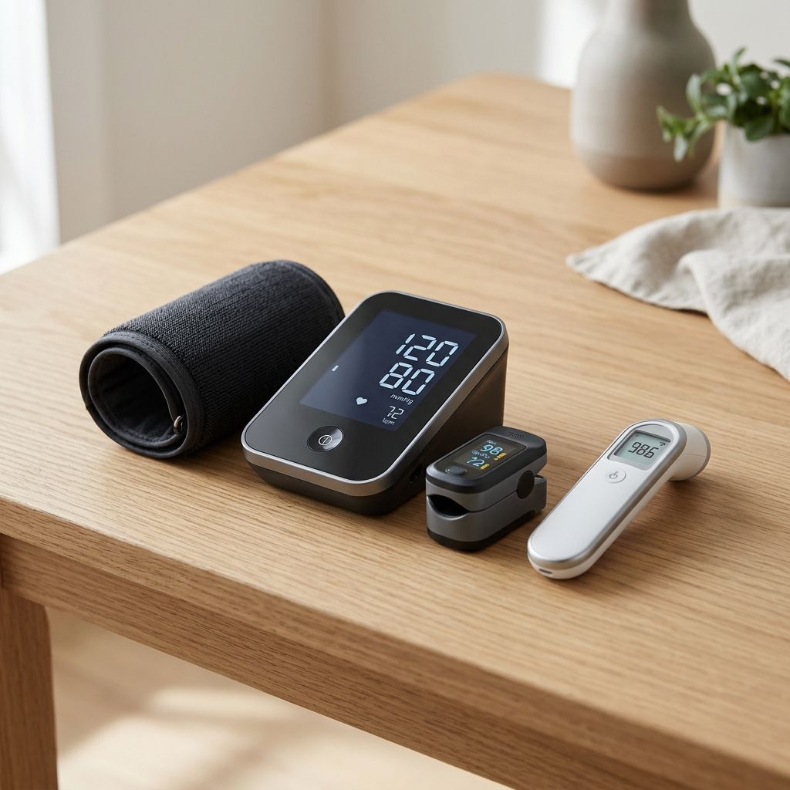
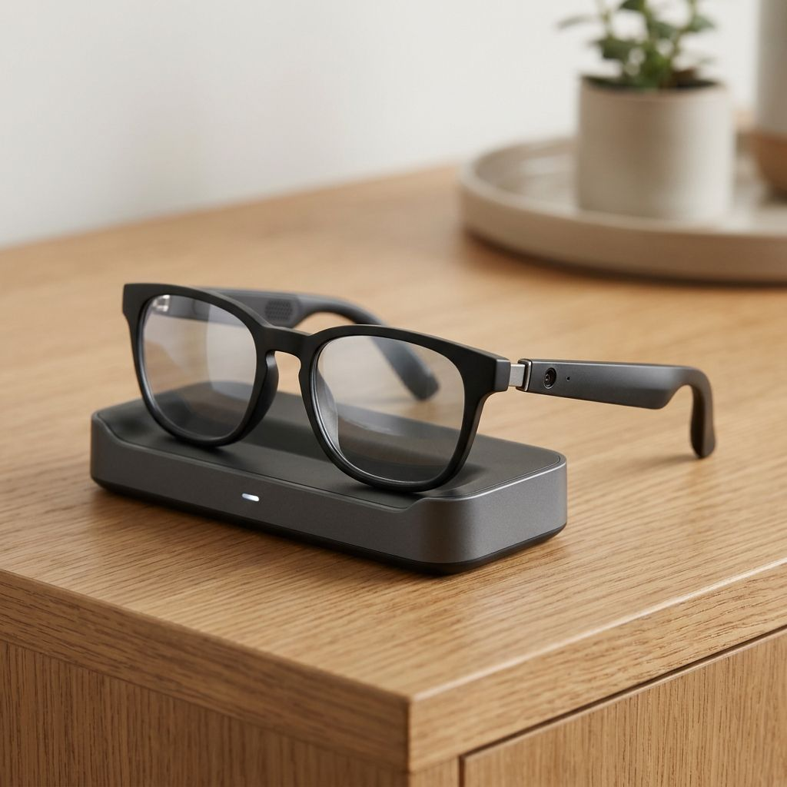
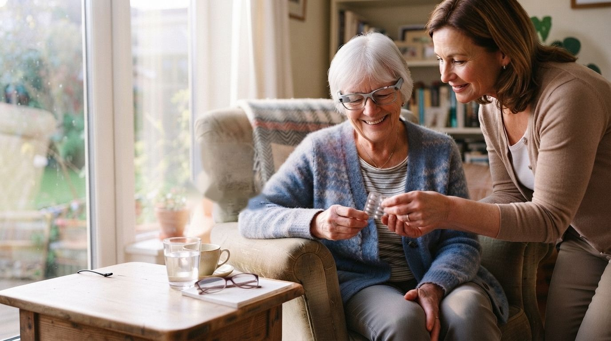
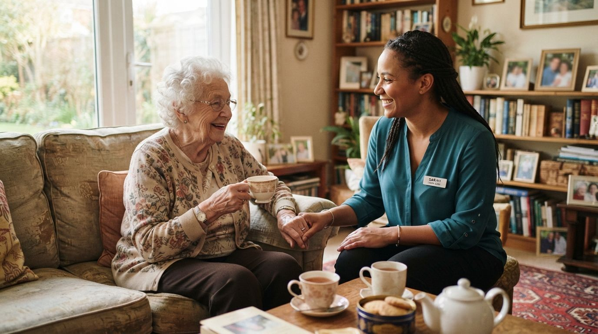

When a parent needs more help at home, every day can bring new worries. EVAKIN brings technology, carers, nurse, doctors and family together, keeping everyone gently in the loop.
We set up simple, trusted devices at home and link them to EVA. EVA notices what each person has agreed to share and makes sure the right person hears, at the right time. Anyone can reach EVA back, whenever they need to. Use the devices you already own, or rent them from EVAKIN, set up and ready to go.
Signals EVA reads, one wayMessages and calls, both ways
In the home

Now
Smart watchEVA reads Falls, heart rhythm, steps

Now
Health monitorsEVA reads Blood pressure, oxygen, temperature, sleep
Exercise mirrorEVA reads Guided movement sessions done

In development
Carer glassesEVA reads Task clips the carer chooses to record
EVAHome health tech has existed for years, but nothing connected it. EVA links every device, spots when her routine drifts, tells the right person and guides everyone through the care journey.
Always a human in the loopVoice, WhatsApp, app, emailConsent on every share
Your parentVoice · speakerEVA sends Daily chat, reminders, companyThey send Asks anything, any time
CarersAppEVA sends Tasks, training, live helpThey send Logs visits, asks how to
Check-in personAppEVA sends Missed check-ins, quiet signsThey send Confirms they have spoken
NurseApp or WhatsAppEVA sends Readings and results before visitsThey send Adds visit notes
DoctorsEmailEVA sends Summaries when a decision is dueThey send Replies with a decision
FamilyApp and digestEVA sends Daily digest, approvalsThey send Asks how Mum is today
The circle of care
EVA only shares what each person has agreed to. EVAKIN offers support and information. It is not a substitute for medical advice, diagnosis or treatment, and it is not an emergency service. In an emergency, call your local emergency number.
EVA at work
Everything comes together. Everyone understands.
EVA gathers every reading, note and result in one place, then turns it into what each person needs: a briefing for the carer, a clear answer for the family and a short summary for the GP.
Watch
6,420 steps today
Blood pressure
128/82 | in range
Carer note · 09:40
Ate well, walked to the shop
Sleep
7 h 10 min
Lab results
Blood test PDF received
EVA · record updated
One record
Every detail comes together.
Readings, carer notes and lab results flow into one record. Nothing lives in a WhatsApp thread or someone's memory any more.

EVA · carer briefing
Lesson 3 of 5: the evening routine
Step 1
Help her sit upright before tablets.
Step 2
Evening tablets at 20:00, with water.
Watch for
Freezing when she turns. Pause, count, step.
For carers
Every carer learns her way.
Short lessons about this person, not a generic manual, with answers whenever a carer is unsure.
EVA · for Sara
Why is Mum more tired this week?
What EVA sees
Sleep down about an hour a night since Monday.
What happens next
Nurse Amira will check on Thursday.
Learn more
Sleep and Parkinson's · 3 min read
For family
Understand, track, take action.
Plain answers about what is changing, what happens next, and short explainers when you want to know more.
EVA · summary for Dr Patel
Elena Rossi · before Friday's review
Evenings
Stiffness reported 4 of the last 7.
Question from Nurse Amira
Should the evening tablet timing change?
Delivery
Sent 09:12 | read 09:40
For the GP
The right information reaches the medical responsible.
EVA carries the important details to the GP in one short summary, then makes sure the answer gets back to everyone.
Names and readings are illustrative.
Case study · Parkinson's at home
A day with Elena, 81, living with Parkinson's.
Elena lives at home with a carer. Here is how EVA supports her medication, movement, sleep and mood, and keeps her family close.

GM
Grace MensahCarer visit logged Today, 09:00 to 17:00Shared with family
EVA · Evening tablets taken, 20:04. Sara has been told.
Medication
Levodopa on time, every time.
Timing matters with Parkinson's medication. EVA reminds her by voice and logs each dose, so a missed one never goes unnoticed.
EVA Good morning, Elena. Your levodopa is due at 10:00.
Thank you. I'll take it with breakfast.
EVA Taken at 10:02. I've logged it for Nurse Amira.
Voice conversation
Movement
Noticing when she slows down.
Her watch tracks walking pace. When she is slower than her usual, EVA checks with the carer and tells the nurse.
EVA · movement
EVA Elena's walking has been slower than her usual for 3 days.
She seemed stiff this morning too.
EVA Thanks Grace. I've shared this with Nurse Amira.
Exercise
Moving well, at the mirror.
Short guided sessions on her interactive mirror, at her own pace. EVA keeps count and cheers her on.
Today: arm raises and stepping
12 minutes. Session 4 of 5 this week, done at 11:20.
EVA tracks her sleep and shares tips from her care plan, agreed with Nurse Amira.
Last night
Elena Rossi6 h 10 min
Woke 3 times. Up at 03:40 for 20 minutes.
Elena RossiFrom her care plan
Wind down at 21:30: lights low, a warm drink, no screens.
Mood
Mood and connection.
A gentle daily mood check-in. When she seems low or quieter than usual, EVA nudges family to call.
EVA · mood check-in“A bit low today.”Two fewer calls than usual this week. EVA has asked Sara if she can call this evening.
Mood · lower for 3 daysCall with Sara · 19:00
Family
Peace of mind, wherever you are.
A gentle morning update, the decisions that are yours to make, and EVA on hand whenever you want to know how Mum is.
Good morning, SaraMum's day so far
Slept6 h 10 min
Levodopa today3 of 3 on time
Mirror session12 min
Next nurse visitThursday
Ask EVA about Mum
Approval neededNew carer starts MondayEVA has prepared her briefing. Approve sharing Mum's care guide?
Elena is a composite case for illustration, not a real patient. Names and screens are illustrative.
Why we're building EVAKIN
Built by people who needed it most.
EVAKIN didn't start in a lab. It started in our own families, with years of phone calls, lists and worry. We're building the support we wish we'd had.
I
IdaFounder · caring for her mum since 2011
“My mum has Parkinson's. She's 81 now, and I've been caring for her since 2011.”
Mum was admitted to hospital eight times before I found the pattern every specialist had missed. Each doctor saw a dot; no one drew the line. EVAKIN is the one place that connects her whole story.
Care information is personal. Here is how we look after it, and what EVA will and won't do.
Consent first
Your parent decides what is shared and with whom. Every share is recorded, and permissions can be changed at any time.
Carers supported, not watched
EVA never scores or monitors carers. Glasses record only what the carer chooses, and only for care.
Your data, protected
Encrypted and handled under UK GDPR and the data laws where your parent lives. We never sell personal data.
People decide, EVA supports
EVA does not diagnose or change medication. Nurses and doctors make clinical decisions. EVAKIN is not an emergency service.
Questions
Questions families ask.
How much will EVAKIN cost?
We are setting prices with our founding families. Tell us what feels fair in the form below.
Which devices do we need?
Your choice. Use devices you already own, such as a smartwatch or a blood pressure monitor, or rent them from EVAKIN, set up and ready to go. We will advise on what fits your parent.
Does my parent need to be good with technology?
No. She can simply talk to EVA. Carers and family use WhatsApp, email or the app.
Is EVA a doctor?
No. EVA organises, explains and reminds. Clinical decisions stay with nurses and doctors.
Where is EVAKIN available?
We are starting with a small group of founding families. Tell us where you and your parent live, so we know where to go next.
What happens after I join?
We will email to say hello and may invite you to a short call. Joining is free, with no commitment.
Founding members
Help shape care that feels lighter.
Founding families get early access and a direct line to the team building EVAKIN. Tell us a little about your family and we'll be in touch. Joining is free.